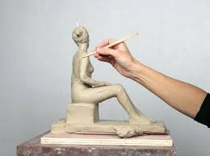

Before Technology


Before technology, we never had graphic arts. Instead, we had to sketch, paint, sculpt, etc..
Before technology, we never had graphic arts. Instead, we had to sketch, paint, sculpt, etc..